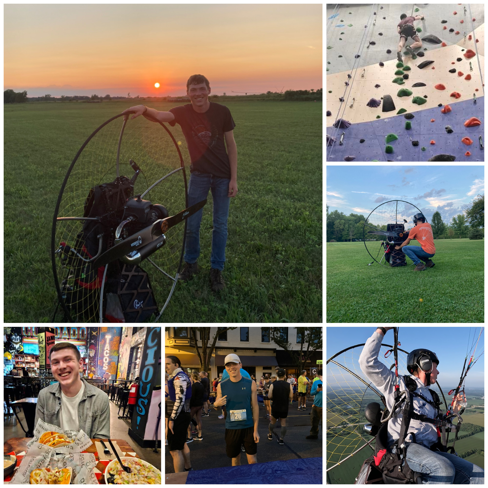

My story all started when my family fell victim to a cybersecurity attack. Everyone found it scary and something we need to worry about. I saw it as something we can learn more from and find out how to stop it in the future. After this I began pursing the Computer Science pathway at my local highschool graduating high school in 3 years with honors and a technical diploma within Computer Science. During my junior/senior year I began looking for colleges to apply to and set my sights on a city such as Indianapolis. I made my first choice IUPUI, I applied and got into their honors college. After one year the school split in half, a Purdue University side and a Indiana University side. I followed with the Purdue track and decided to weather the changes and keep my head up. Throughout my time in college I have focused on applying the things I have learned with CTFs and TryHackMe. I also joined the Purdue CyberSecurity Club and we competed in the National Cyber League and our team placed in the top 15% of teams out of nearly 600. I continue to apply myself in school and am currently setting my sights on landing my second internship for summer 2025.
During the summer season you can find me going inverted and flying on my Ultralight a Powered Paramotor. This was a goal of mine for the longest time was to be able to fly like the birds. I intially got introduced to aviation from a young age (around the age of 10) with my family members in the Armed Forces. Occasionally we would get the ability to take orientation flights through Civil Air Patrol (The auxiliary of the US Air Force) or the EAA Young Eagles program which we were active members of. The problem with flying in a airplane like a Cessna or MoonPie is that your view is always obstructed with the dash or the pitch of the aircraft. I desired the free feeling of something more simple. It took many years after this for me to finally see it. My family went to EAA Oshkosh the largest aviation show in the US and we saw a Powered Paramotor for the first time. I was a little reserved at first looking at it as they look frail but they need to be light and able to go on your back. I began saving money and was able to start my training the summer before my 17th birthday. I also enjoy weightlifting, running, rock climbing, cooking, carpentry, and anything to do with computers.
Check out a few of these photos and if you are more intersted in flying check me out on my small YouTube channel @flyingwithkaleb
